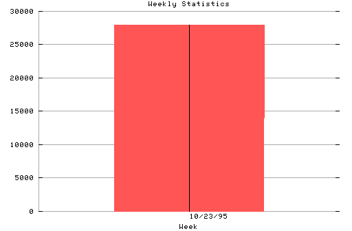

HTTP Server Weekly Statistics
Covers: 10/23/95 to 10/26/95 (4 days).
All dates are in local time.
Week of 10/23/95: 27946 : ############################################||###

Statistics generated at Thu Oct 26 19:59:26 MET 1995, (C) Oslonett AS, 1995.